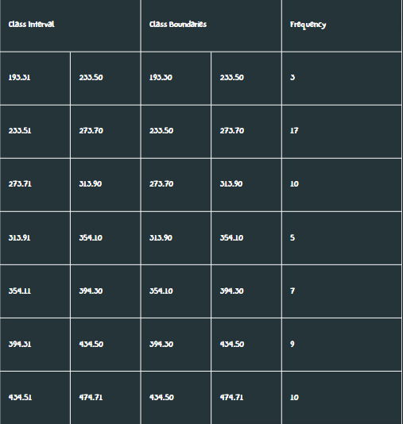
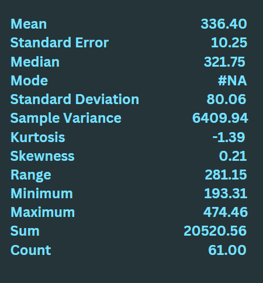
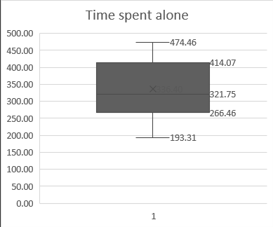

Summary Statistics
Alone time is essential for self-discovery, stress reduction, and fostering creativity and innovation. It provides an opportunity for introspection, emotional regulation, and personal growth, while also enhancing one's ability to appreciate and engage in meaningful social connections. Striking a healthy balance between alone time and social interaction is crucial for overall well-being and personal development. This page shows the summary statistics of the time spent alone on average(in minutes).
Frequency data table:
Descriptive analysis:
The mean is 336.40. The median is 321.75. The standard Deviation is 80.06. This shows that among 61 respondents, they spend on average around 321.75 minutes alone. The median is used here for the data is asymmetrical based on the histogram and the skewness. While there are no outliers in the data, many of the respondents usually spend around the range of 266.46 - 321.75 minutes alone. As observed in the descriptive analysis, the standard deviation is very high, which implies large differences between the lower values portion and the higher values portion of the list. The histogram also visualizes how spread out the values are and how it is distributed.
Box and Whisker plots:
The skewness is 0.21. The 1st quartile is 266.46. The median is 321.75. The 3rd quartile is 414.07. The shape of the distribution of time spent alone is asymmetrical and positively skewed or skewed to the right. Though in another perspective you can also consider this distribution roughly symmetric but U-shaped. There are no outliers that were observed, and most data observed is spread out with an IQR of 147.61